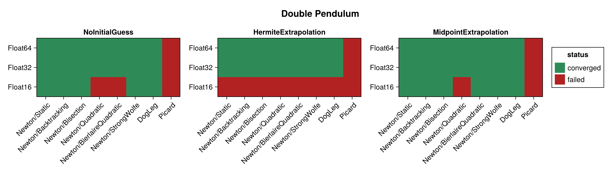
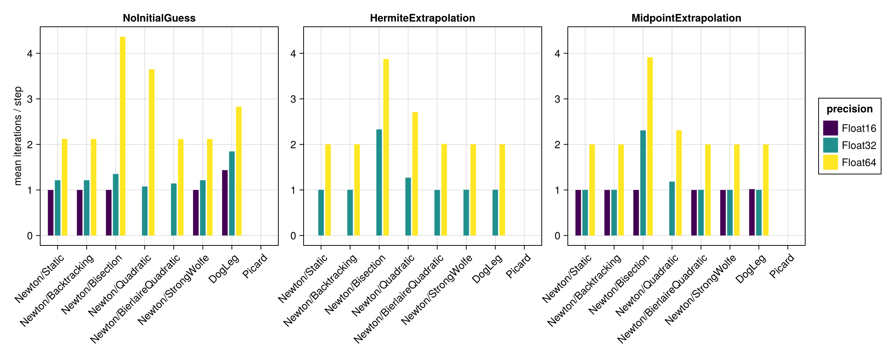
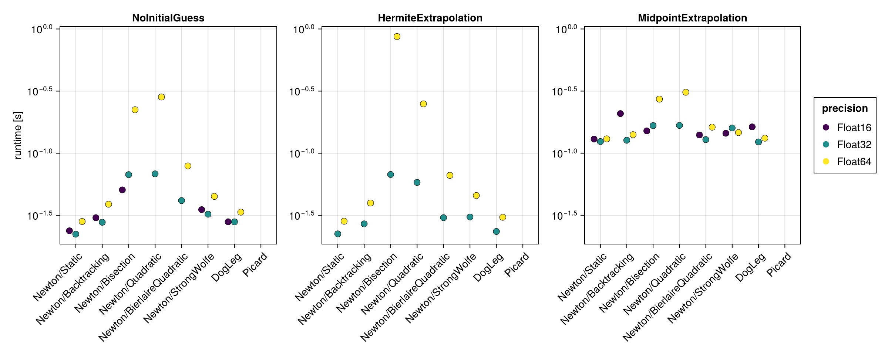
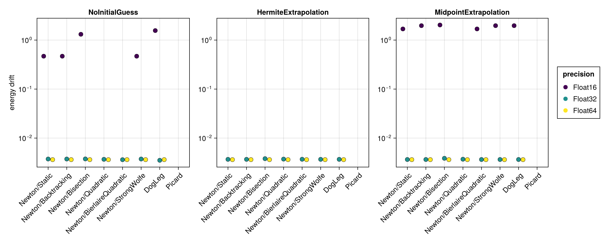
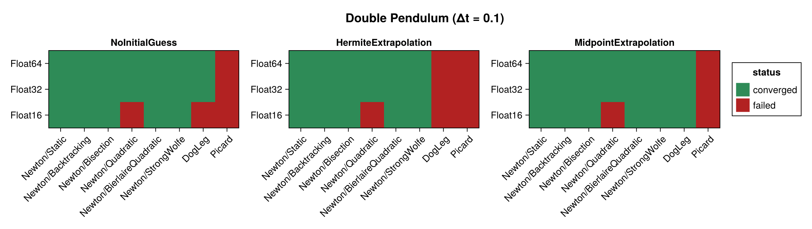
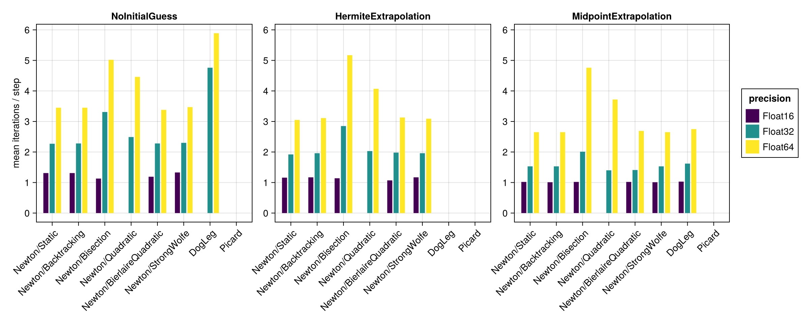
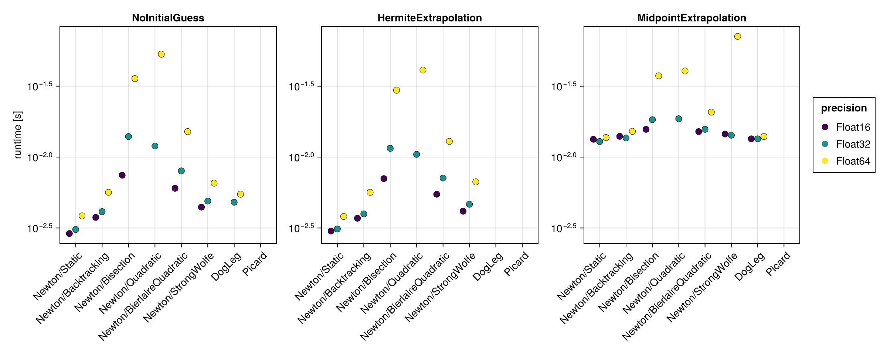
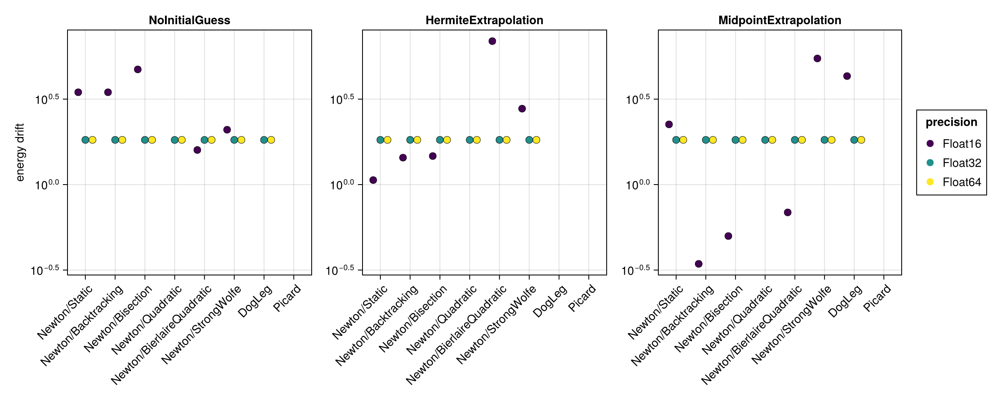

Double Pendulum
The double pendulum is a chaotic, strongly nonlinear Hamiltonian system. It is built here with hodeproblem (the canonical Hamiltonian form), so the implicit midpoint equations require genuine nonlinear iterations at every step. Because the Hamiltonian $H(t, q, p)$ depends on both the coordinates $q$ and the momenta $p$, the energy-drift proxy is evaluated from the full $(q, p)$ state.
The benchmark below is regenerated at documentation build time with a single, fast timing pass. See the driver script scripts/midpoint_double_pendulum.jl for accurate BenchmarkTools measurements. The results are shown first for the standard step $\Delta t = 0.01$ and then repeated for a coarse step $\Delta t = 0.1$ (see Coarse time step (Δt = 0.1)).
using SolverBenchmark
spec = double_pendulum_spec(timespan = (0.0, 10.0), timestep = 0.01)
df = run_benchmark(spec; timing = :quick, verbose = false, quiet = true)Convergence
plot_convergence(df; title = "Double Pendulum")
Nonlinear iterations
Mean number of nonlinear-solver iterations per time step (converged runs only):
plot_iterations(df)
Run time
plot_runtime(df)
Energy drift
Drift of the conserved energy $H(t, q, p)$ of the double pendulum:
plot_energy_drift(df)
Discussion
- The problem is chaotic and nonlinear, so Newton needs genuine iterations at every step. All six line searches behave similarly;
Newton/Quadraticis the weakest of them but still converges for two thirds of the runs.Picardnever converges here, and atΔt = 0.01it is the only failure atFloat32/Float64; at the coarse stepDogLegjoins it. - No closed-form solution is available, so accuracy is judged solely through the energy drift, which scales with the floating point precision.
Results table
markdown_table(summary_table(df))| precision | solver_label | initial_guess | converged | iterations_mean | runtime_s | max_residual | energy_drift |
|---|---|---|---|---|---|---|---|
| Float16 | Newton/Static | NoInitialGuess | ✓ | 1 | 0.0238 | 0.235 | 0.469 |
| Float16 | Newton/Static | HermiteExtrapolation | ✗ | — | — | — | — |
| Float16 | Newton/Static | MidpointExtrapolation | ✓ | 1 | 0.13 | 0.221 | 1.69 |
| Float16 | Newton/Backtracking | NoInitialGuess | ✓ | 1 | 0.0303 | 0.235 | 0.469 |
| Float16 | Newton/Backtracking | HermiteExtrapolation | ✗ | — | — | — | — |
| Float16 | Newton/Backtracking | MidpointExtrapolation | ✓ | 1 | 0.208 | 0.221 | 1.97 |
| Float16 | Newton/Bisection | NoInitialGuess | ✓ | 1 | 0.0507 | 0.25 | 1.31 |
| Float16 | Newton/Bisection | HermiteExtrapolation | ✗ | — | — | — | — |
| Float16 | Newton/Bisection | MidpointExtrapolation | ✓ | 1 | 0.151 | 0.249 | 2.03 |
| Float16 | Newton/Quadratic | NoInitialGuess | ✗ | 1.08 | 0.0526 | 2.84 | — |
| Float16 | Newton/Quadratic | HermiteExtrapolation | ✗ | — | — | — | — |
| Float16 | Newton/Quadratic | MidpointExtrapolation | ✗ | 1.05 | 0.155 | 0.715 | — |
| Float16 | Newton/BierlaireQuadratic | NoInitialGuess | ✗ | 1 | 0.042 | 0.295 | — |
| Float16 | Newton/BierlaireQuadratic | HermiteExtrapolation | ✗ | — | — | — | — |
| Float16 | Newton/BierlaireQuadratic | MidpointExtrapolation | ✓ | 1 | 0.14 | 0.211 | 1.69 |
| Float16 | Newton/StrongWolfe | NoInitialGuess | ✓ | 1 | 0.0352 | 0.235 | 0.469 |
| Float16 | Newton/StrongWolfe | HermiteExtrapolation | ✗ | — | — | — | — |
| Float16 | Newton/StrongWolfe | MidpointExtrapolation | ✓ | 1 | 0.145 | 0.221 | 1.97 |
| Float16 | DogLeg | NoInitialGuess | ✓ | 1.44 | 0.0281 | 0.25 | 1.56 |
| Float16 | DogLeg | HermiteExtrapolation | ✗ | — | — | — | — |
| Float16 | DogLeg | MidpointExtrapolation | ✓ | 1.02 | 0.163 | 0.221 | 1.97 |
| Float16 | Picard | NoInitialGuess | ✗ | 1.86 | 0.0361 | 39.7 | — |
| Float16 | Picard | HermiteExtrapolation | ✗ | 23.3 | 0.258 | NaN | — |
| Float16 | Picard | MidpointExtrapolation | ✗ | 1.22 | 0.165 | 4.33 | — |
| Float32 | Newton/Static | NoInitialGuess | ✓ | 1.21 | 0.0223 | 3.04e-05 | 0.00374 |
| Float32 | Newton/Static | HermiteExtrapolation | ✓ | 1 | 0.0224 | 3.01e-05 | 0.00368 |
| Float32 | Newton/Static | MidpointExtrapolation | ✓ | 1 | 0.124 | 2.77e-05 | 0.00365 |
| Float32 | Newton/Backtracking | NoInitialGuess | ✓ | 1.21 | 0.0278 | 3.04e-05 | 0.00374 |
| Float32 | Newton/Backtracking | HermiteExtrapolation | ✓ | 1 | 0.027 | 3.01e-05 | 0.00368 |
| Float32 | Newton/Backtracking | MidpointExtrapolation | ✓ | 1 | 0.127 | 2.77e-05 | 0.00365 |
| Float32 | Newton/Bisection | NoInitialGuess | ✓ | 1.35 | 0.0672 | 3.02e-05 | 0.00376 |
| Float32 | Newton/Bisection | HermiteExtrapolation | ✓ | 2.33 | 0.0674 | 3.05e-05 | 0.0038 |
| Float32 | Newton/Bisection | MidpointExtrapolation | ✓ | 2.31 | 0.167 | 3.03e-05 | 0.00386 |
| Float32 | Newton/Quadratic | NoInitialGuess | ✓ | 1.08 | 0.0682 | 2.99e-05 | 0.00368 |
| Float32 | Newton/Quadratic | HermiteExtrapolation | ✓ | 1.27 | 0.0582 | 3.04e-05 | 0.00372 |
| Float32 | Newton/Quadratic | MidpointExtrapolation | ✓ | 1.18 | 0.167 | 3.05e-05 | 0.0037 |
| Float32 | Newton/BierlaireQuadratic | NoInitialGuess | ✓ | 1.14 | 0.0416 | 3e-05 | 0.00362 |
| Float32 | Newton/BierlaireQuadratic | HermiteExtrapolation | ✓ | 1 | 0.0303 | 2.57e-05 | 0.0037 |
| Float32 | Newton/BierlaireQuadratic | MidpointExtrapolation | ✓ | 1 | 0.129 | 2.77e-05 | 0.00365 |
| Float32 | Newton/StrongWolfe | NoInitialGuess | ✓ | 1.21 | 0.0323 | 3.04e-05 | 0.00374 |
| Float32 | Newton/StrongWolfe | HermiteExtrapolation | ✓ | 1 | 0.0307 | 3.01e-05 | 0.00368 |
| Float32 | Newton/StrongWolfe | MidpointExtrapolation | ✓ | 1 | 0.16 | 2.77e-05 | 0.00365 |
| Float32 | DogLeg | NoInitialGuess | ✓ | 1.85 | 0.028 | 3.04e-05 | 0.00352 |
| Float32 | DogLeg | HermiteExtrapolation | ✓ | 1 | 0.0235 | 3.01e-05 | 0.00368 |
| Float32 | DogLeg | MidpointExtrapolation | ✓ | 1 | 0.123 | 2.77e-05 | 0.00365 |
| Float32 | Picard | NoInitialGuess | ✗ | 2.1 | 0.0554 | 36 | — |
| Float32 | Picard | HermiteExtrapolation | ✗ | 2 | 0.0474 | 0.621 | — |
| Float32 | Picard | MidpointExtrapolation | ✗ | 2 | 0.144 | 0.0215 | — |
| Float64 | Newton/Static | NoInitialGuess | ✓ | 2.12 | 0.0282 | 5.66e-14 | 0.00363 |
| Float64 | Newton/Static | HermiteExtrapolation | ✓ | 2 | 0.0284 | 5.28e-14 | 0.00363 |
| Float64 | Newton/Static | MidpointExtrapolation | ✓ | 2 | 0.131 | 5.61e-14 | 0.00363 |
| Float64 | Newton/Backtracking | NoInitialGuess | ✓ | 2.12 | 0.0389 | 5.66e-14 | 0.00363 |
| Float64 | Newton/Backtracking | HermiteExtrapolation | ✓ | 2 | 0.0398 | 5.28e-14 | 0.00363 |
| Float64 | Newton/Backtracking | MidpointExtrapolation | ✓ | 2 | 0.141 | 5.61e-14 | 0.00363 |
| Float64 | Newton/Bisection | NoInitialGuess | ✓ | 4.37 | 0.224 | 5.67e-14 | 0.00363 |
| Float64 | Newton/Bisection | HermiteExtrapolation | ✓ | 3.88 | 0.87 | 5.64e-14 | 0.00363 |
| Float64 | Newton/Bisection | MidpointExtrapolation | ✓ | 3.92 | 0.273 | 5.53e-14 | 0.00363 |
| Float64 | Newton/Quadratic | NoInitialGuess | ✓ | 3.65 | 0.283 | 5.65e-14 | 0.00363 |
| Float64 | Newton/Quadratic | HermiteExtrapolation | ✓ | 2.71 | 0.25 | 5.63e-14 | 0.00363 |
| Float64 | Newton/Quadratic | MidpointExtrapolation | ✓ | 2.31 | 0.31 | 5.62e-14 | 0.00363 |
| Float64 | Newton/BierlaireQuadratic | NoInitialGuess | ✓ | 2.12 | 0.0791 | 5.62e-14 | 0.00363 |
| Float64 | Newton/BierlaireQuadratic | HermiteExtrapolation | ✓ | 2.01 | 0.0663 | 4.59e-14 | 0.00363 |
| Float64 | Newton/BierlaireQuadratic | MidpointExtrapolation | ✓ | 2 | 0.162 | 5.44e-14 | 0.00363 |
| Float64 | Newton/StrongWolfe | NoInitialGuess | ✓ | 2.12 | 0.0449 | 5.66e-14 | 0.00363 |
| Float64 | Newton/StrongWolfe | HermiteExtrapolation | ✓ | 2 | 0.0457 | 5.28e-14 | 0.00363 |
| Float64 | Newton/StrongWolfe | MidpointExtrapolation | ✓ | 2 | 0.147 | 5.61e-14 | 0.00363 |
| Float64 | DogLeg | NoInitialGuess | ✓ | 2.83 | 0.0336 | 5.66e-14 | 0.00363 |
| Float64 | DogLeg | HermiteExtrapolation | ✓ | 2 | 0.0305 | 5.28e-14 | 0.00363 |
| Float64 | DogLeg | MidpointExtrapolation | ✓ | 2 | 0.132 | 5.61e-14 | 0.00363 |
| Float64 | Picard | NoInitialGuess | ✗ | 2.1 | 0.105 | 36 | — |
| Float64 | Picard | HermiteExtrapolation | ✗ | 2 | 0.1 | 0.62 | — |
| Float64 | Picard | MidpointExtrapolation | ✗ | 2 | 0.197 | 0.0215 | — |
Coarse time step (Δt = 0.1)
With a ten times larger step the equations become more strongly nonlinear, which stresses the solvers noticeably more than the $\Delta t = 0.01$ results above.
spec1 = double_pendulum_spec(timespan = (0.0, 10.0), timestep = 0.1)
df1 = run_benchmark(spec1; timing = :quick, verbose = false, quiet = true)Convergence
plot_convergence(df1; title = "Double Pendulum (Δt = 0.1)")
Nonlinear iterations
plot_iterations(df1)
Run time
plot_runtime(df1)
Energy drift
plot_energy_drift(df1)
Results table
markdown_table(summary_table(df1))| precision | solver_label | initial_guess | converged | iterations_mean | runtime_s | max_residual | energy_drift |
|---|---|---|---|---|---|---|---|
| Float16 | Newton/Static | NoInitialGuess | ✓ | 1.31 | 0.00289 | 0.232 | 3.47 |
| Float16 | Newton/Static | HermiteExtrapolation | ✓ | 1.16 | 0.00301 | 0.246 | 1.06 |
| Float16 | Newton/Static | MidpointExtrapolation | ✓ | 1.02 | 0.0133 | 0.246 | 2.25 |
| Float16 | Newton/Backtracking | NoInitialGuess | ✓ | 1.31 | 0.00376 | 0.232 | 3.47 |
| Float16 | Newton/Backtracking | HermiteExtrapolation | ✓ | 1.17 | 0.0037 | 0.206 | 1.44 |
| Float16 | Newton/Backtracking | MidpointExtrapolation | ✓ | 1.01 | 0.014 | 0.218 | 0.344 |
| Float16 | Newton/Bisection | NoInitialGuess | ✓ | 1.13 | 0.00744 | 0.249 | 4.72 |
| Float16 | Newton/Bisection | HermiteExtrapolation | ✓ | 1.14 | 0.00705 | 0.222 | 1.47 |
| Float16 | Newton/Bisection | MidpointExtrapolation | ✓ | 1.02 | 0.0157 | 0.241 | 0.5 |
| Float16 | Newton/Quadratic | NoInitialGuess | ✗ | 1.19 | 0.00684 | 6.7 | — |
| Float16 | Newton/Quadratic | HermiteExtrapolation | ✗ | 1.23 | 0.0058 | 2.31 | — |
| Float16 | Newton/Quadratic | MidpointExtrapolation | ✗ | 1.16 | 0.0163 | 0.569 | — |
| Float16 | Newton/BierlaireQuadratic | NoInitialGuess | ✓ | 1.19 | 0.00602 | 0.223 | 1.59 |
| Float16 | Newton/BierlaireQuadratic | HermiteExtrapolation | ✓ | 1.07 | 0.00547 | 0.636 | 6.91 |
| Float16 | Newton/BierlaireQuadratic | MidpointExtrapolation | ✓ | 1.02 | 0.0151 | 0.255 | 0.688 |
| Float16 | Newton/StrongWolfe | NoInitialGuess | ✓ | 1.33 | 0.00444 | 0.25 | 2.09 |
| Float16 | Newton/StrongWolfe | HermiteExtrapolation | ✓ | 1.17 | 0.00415 | 0.243 | 2.78 |
| Float16 | Newton/StrongWolfe | MidpointExtrapolation | ✓ | 1.01 | 0.0145 | 0.218 | 5.47 |
| Float16 | DogLeg | NoInitialGuess | ✗ | — | — | — | — |
| Float16 | DogLeg | HermiteExtrapolation | ✗ | — | — | — | — |
| Float16 | DogLeg | MidpointExtrapolation | ✓ | 1.03 | 0.0135 | 0.243 | 4.31 |
| Float16 | Picard | NoInitialGuess | ✗ | 4.99 | 0.00567 | 41.1 | — |
| Float16 | Picard | HermiteExtrapolation | ✗ | — | — | — | — |
| Float16 | Picard | MidpointExtrapolation | ✗ | 1.43 | 0.0138 | 1.82 | — |
| Float32 | Newton/Static | NoInitialGuess | ✓ | 2.27 | 0.00309 | 2.61e-05 | 1.83 |
| Float32 | Newton/Static | HermiteExtrapolation | ✓ | 1.92 | 0.00312 | 2.69e-05 | 1.83 |
| Float32 | Newton/Static | MidpointExtrapolation | ✓ | 1.53 | 0.0129 | 3.04e-05 | 1.83 |
| Float32 | Newton/Backtracking | NoInitialGuess | ✓ | 2.28 | 0.00412 | 2.61e-05 | 1.83 |
| Float32 | Newton/Backtracking | HermiteExtrapolation | ✓ | 1.96 | 0.00398 | 2.72e-05 | 1.83 |
| Float32 | Newton/Backtracking | MidpointExtrapolation | ✓ | 1.53 | 0.0136 | 3.04e-05 | 1.83 |
| Float32 | Newton/Bisection | NoInitialGuess | ✓ | 3.31 | 0.014 | 2.86e-05 | 1.83 |
| Float32 | Newton/Bisection | HermiteExtrapolation | ✓ | 2.85 | 0.0115 | 3.03e-05 | 1.83 |
| Float32 | Newton/Bisection | MidpointExtrapolation | ✓ | 2.01 | 0.0183 | 2.94e-05 | 1.83 |
| Float32 | Newton/Quadratic | NoInitialGuess | ✓ | 2.49 | 0.012 | 2.84e-05 | 1.82 |
| Float32 | Newton/Quadratic | HermiteExtrapolation | ✓ | 2.03 | 0.0105 | 2.83e-05 | 1.83 |
| Float32 | Newton/Quadratic | MidpointExtrapolation | ✓ | 1.4 | 0.0186 | 2.89e-05 | 1.83 |
| Float32 | Newton/BierlaireQuadratic | NoInitialGuess | ✓ | 2.28 | 0.00799 | 2.89e-05 | 1.83 |
| Float32 | Newton/BierlaireQuadratic | HermiteExtrapolation | ✓ | 1.98 | 0.00712 | 2.91e-05 | 1.83 |
| Float32 | Newton/BierlaireQuadratic | MidpointExtrapolation | ✓ | 1.41 | 0.0157 | 2.71e-05 | 1.83 |
| Float32 | Newton/StrongWolfe | NoInitialGuess | ✓ | 2.3 | 0.00489 | 2.71e-05 | 1.83 |
| Float32 | Newton/StrongWolfe | HermiteExtrapolation | ✓ | 1.96 | 0.00465 | 2.69e-05 | 1.83 |
| Float32 | Newton/StrongWolfe | MidpointExtrapolation | ✓ | 1.53 | 0.0143 | 3.04e-05 | 1.83 |
| Float32 | DogLeg | NoInitialGuess | ✓ | 4.76 | 0.0048 | 2.89e-05 | 1.83 |
| Float32 | DogLeg | HermiteExtrapolation | ✗ | — | — | — | — |
| Float32 | DogLeg | MidpointExtrapolation | ✓ | 1.62 | 0.0135 | 2.98e-05 | 1.83 |
| Float32 | Picard | NoInitialGuess | ✗ | 4.05 | 0.00832 | 36.9 | — |
| Float32 | Picard | HermiteExtrapolation | ✗ | 3.03 | 0.00825 | 195 | — |
| Float32 | Picard | MidpointExtrapolation | ✗ | 2.13 | 0.0157 | 0.947 | — |
| Float64 | Newton/Static | NoInitialGuess | ✓ | 3.45 | 0.00385 | 4.05e-14 | 1.83 |
| Float64 | Newton/Static | HermiteExtrapolation | ✓ | 3.05 | 0.00381 | 5.15e-14 | 1.83 |
| Float64 | Newton/Static | MidpointExtrapolation | ✓ | 2.65 | 0.0137 | 4.05e-14 | 1.83 |
| Float64 | Newton/Backtracking | NoInitialGuess | ✓ | 3.45 | 0.00564 | 5.03e-14 | 1.83 |
| Float64 | Newton/Backtracking | HermiteExtrapolation | ✓ | 3.11 | 0.00564 | 5.38e-14 | 1.83 |
| Float64 | Newton/Backtracking | MidpointExtrapolation | ✓ | 2.65 | 0.0152 | 4.05e-14 | 1.83 |
| Float64 | Newton/Bisection | NoInitialGuess | ✓ | 5.02 | 0.0358 | 4.89e-14 | 1.83 |
| Float64 | Newton/Bisection | HermiteExtrapolation | ✓ | 5.17 | 0.0296 | 5.65e-14 | 1.83 |
| Float64 | Newton/Bisection | MidpointExtrapolation | ✓ | 4.76 | 0.0374 | 4.93e-14 | 1.83 |
| Float64 | Newton/Quadratic | NoInitialGuess | ✓ | 4.46 | 0.0532 | 5.55e-14 | 1.83 |
| Float64 | Newton/Quadratic | HermiteExtrapolation | ✓ | 4.07 | 0.0411 | 5.18e-14 | 1.83 |
| Float64 | Newton/Quadratic | MidpointExtrapolation | ✓ | 3.72 | 0.0405 | 5.03e-14 | 1.83 |
| Float64 | Newton/BierlaireQuadratic | NoInitialGuess | ✓ | 3.38 | 0.0151 | 5.42e-14 | 1.83 |
| Float64 | Newton/BierlaireQuadratic | HermiteExtrapolation | ✓ | 3.13 | 0.0129 | 5.21e-14 | 1.83 |
| Float64 | Newton/BierlaireQuadratic | MidpointExtrapolation | ✓ | 2.69 | 0.0207 | 4.16e-14 | 1.83 |
| Float64 | Newton/StrongWolfe | NoInitialGuess | ✓ | 3.47 | 0.00655 | 4.09e-14 | 1.83 |
| Float64 | Newton/StrongWolfe | HermiteExtrapolation | ✓ | 3.09 | 0.00669 | 5.15e-14 | 1.83 |
| Float64 | Newton/StrongWolfe | MidpointExtrapolation | ✓ | 2.65 | 0.0709 | 4.05e-14 | 1.83 |
| Float64 | DogLeg | NoInitialGuess | ✓ | 5.89 | 0.00547 | 4.86e-14 | 1.83 |
| Float64 | DogLeg | HermiteExtrapolation | ✗ | — | — | — | — |
| Float64 | DogLeg | MidpointExtrapolation | ✓ | 2.75 | 0.014 | 5.37e-14 | 1.83 |
| Float64 | Picard | NoInitialGuess | ✗ | 3.97 | 0.0159 | 36.9 | — |
| Float64 | Picard | HermiteExtrapolation | ✗ | 3.05 | 0.0163 | 195 | — |
| Float64 | Picard | MidpointExtrapolation | ✗ | 2.15 | 0.0213 | 0.947 | — |